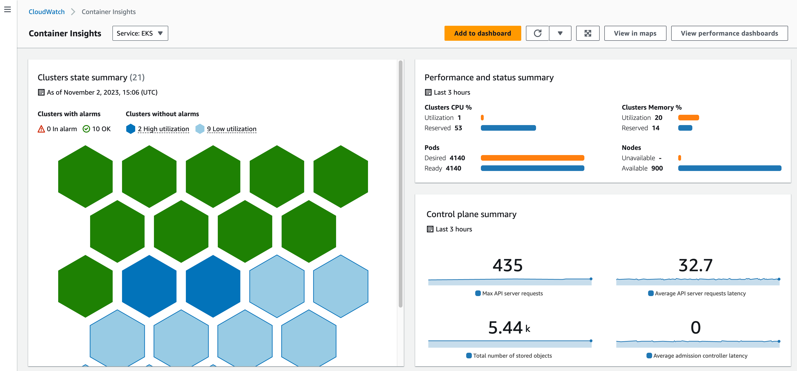
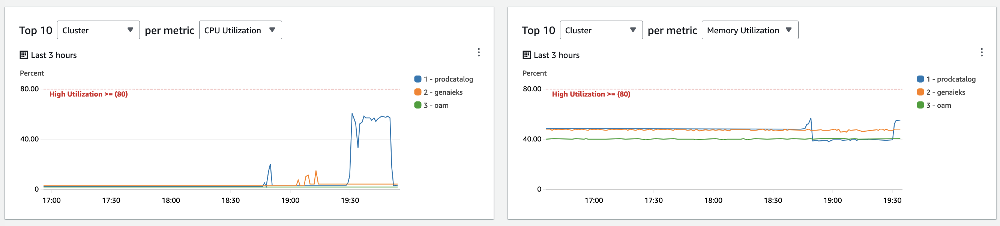

CloudWatch Insights Add-on¶
The Cloudwatch Insights add-on adds support for CloudWatch Insights to an EKS cluster. This replaces the current Container Insights add-on and all customers on it, should migrate to CloudWatch Insights.
Customers can use CloudWatch Insights to collect, aggregate, and summarize metrics and logs from your containerized applications and microservices. Container Insights collects data as performance log events using an embedded metric format. These performance log events are entries that use a structured JSON schema that enables high-cardinality data to be ingested and stored at scale. From this data, CloudWatch creates aggregated metrics at the cluster, node, pod, task, and service level as CloudWatch metrics. The metrics that Container Insights collects are available in CloudWatch automatic dashboards, and also viewable in the Metrics section of the CloudWatch console.
IMPORTANT
CloudWatch does not automatically create all possible metrics from the log data, to help you manage your Container Insights costs. However, you can view additional metrics and additional levels of granularity by using CloudWatch Logs Insights to analyze the raw performance log events.
Metrics collected by Container Insights are charged as custom metrics. For more information about CloudWatch pricing, see Amazon CloudWatch Pricing.
Note: that this add-on cannot co-exist with adot-addon, cloudwatch-adot-addons or cloudwatch-logs on same EKS
cluster as they have conflicting and redundant interactions.
Usage¶
Add the following as an add-on to your main.ts file to add CloudWatch Insights to your cluster
import 'source-map-support/register';
import * as cdk from 'aws-cdk-lib';
import * as blueprints from '@aws-quickstart/eks-blueprints';
const app = new cdk.App();
const addOn = new blueprints.addons.CloudWatchInsights();
const blueprint = blueprints.EksBlueprint.builder()
.version("auto")
.addOns(addOn)
.build(app, 'my-stack-name');
Prerequisites¶
Once the CloudWatch Insights add-on has been installed in your cluster, validate that the
AWS Cloudwatch Observability Controller is installed and FluentBit is installed:
kubectl get pods -n amazon-cloudwatch
You should see output similar to the following respectively:
NAMESPACE NAME READY STATUS RESTARTS AGE
amazon-cloudwatch amazon-cloudwatch-observability-controller-manager 1/1 Running 1 (4d22h ago) 5d
amazon-cloudwatch cloudwatch-agent 1/1 Running 1 (4d22h ago) 5d
amazon-cloudwatch fluent-bit 1/1 Running 1 (4d22h ago) 5d
CloudWatch Dashboard¶
Once enabled, enhanced container insights page looks like below from AWS console, with the high level summary of your clusters, kube-state and control-plane metrics. The Container Insights dashboard shows cluster status and alarms. It uses predefined thresholds for CPU and memory to quickly identify which resources are having higher consumption, and enabling proactive actions to avoid performance impact.

Additional functionality of the addon is listed in this blog Introducing CloudWatch Insights with Enhanced Monitoring.
View Top 10 Lists¶
The CloudWatch Insights Dashboard can also let you quickly view the Top 10 lists of Cluster, Nodes, Pods, Workloads, and Containers as shown below. Based on their consumption, you can set up critical charts that let you identify risky components without using alarms and before you are resource constrained.

Cluster Overview¶
The dashboard also lets you quickly view the consumption of your cluster, with the clusters ranked on their "criticality" where they're top ranking if they're in alarm, and then all the others are ranked based on resource consumption. They're visible in a list view as shown below.

Popular Workloads¶
CloudWatch insights has pre-built automatic dashboards and alarms for popular workloads, and it allows you to drill into logs generated by those workloads as well.

Metrics namespaces¶
CloudWatch insights also exposes the new "ContainersInsights" metrics namespace, it contains all the various dimensions of EKS clusters and the data that's exported from the CloudWatch agents.